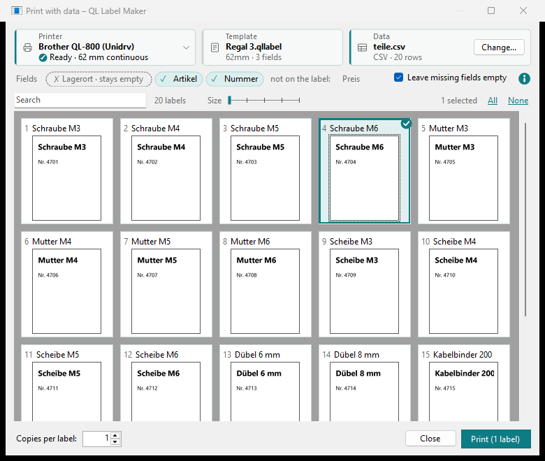

Print with data
One label, many variants: fields in the label are filled from a data file (CSV or JSON), one row per label. You choose which ones to print and see each one beforehand exactly as it will be printed.
-
Fields in the label
A field is a name in braces, e.g.
{Item}, in a text, in a barcode's content or in a field of a QR code. When printing, it is replaced by the value from the column of the same name; upper and lower case don't matter.{Item}- the value from the column "Item"
{Place|Hall 1}- with a default after the vertical bar: used when the column is missing or the cell is empty
{Extra|}- nothing after the bar: without a value the place stays empty
{date}and{time}stay the date and time (Date and time). A value from the data is printed as it is, also when it contains braces.Insert field ▾ > Custom field... asks for the field's name and what applies without a value: Report when printing, Leave empty or a Default value. It inserts the field correctly written; afterwards you can edit it like any text.
-
The data file
The first row names the columns, every further row is one label. Excel saves such a file with Save as > CSV (Comma delimited).
Item,Number,Place Screw M4 × 20,4711,Shelf 3 Nut M4,4712,Shelf 3
Separated by semicolon, comma or tab; UTF-8, UTF-16 or Windows-1252 (how Excel saves without UTF-8). Columns the label doesn't use do no harm. A column
copiessets the number per row; 0 leaves the row out.A column
labelnamegives each label a name, e.g. a short name such asA1234: it shows next to the number in the preview, the search finds it, and messages name it. When the cell is empty, only the number shows; without the column, the row's first value. The label can print it as a field{labelname}too.A JSON file works instead of a CSV file: a list of objects, each value a text, a number,
true/falseornull(empty), without nested objects or lists. Each name is a column; when an object lacks it, the cell is empty.[ { "labelname": "A1234", "Item": "Screw M4 × 20", "Number": 4711, "copies": 2 }, { "labelname": "A1235", "Item": "Nut M4", "Number": 4712 } ] -
Choose the data
File > Print with data… (or Print ▾, Ctrl+Shift+P) takes the open label as the template. At the top are three tiles: Printer with its state and loaded roll (a click opens the list; choose another printer there and QL Label Maker switches with it), Template and Data. A coloured edge on the left shows whether all is well; amber is something to look at, such as a wrong roll. Choose the data with + Choose data file…, another file later with Change…. The Fields line shows what matches: ✗ missing fields first, then ✓ the ones found, then the columns the label doesn't use. What doesn't fit in the line is behind +N more.

A missing field without a default stops printing: add the column, or switch on Leave missing fields empty. A field's default still applies then.
-
Choose the labels
Each label shows as a small preview with its row number and its
labelname(or the row's first value). At the start all are selected; a click on one selects only that one; All and None at the top right select all visible labels or none. Search hides the labels that don't contain the text, e.g. to find the one variant out of twenty; the ✕ at its end clears the search. Zoom makes the previews larger or smaller, also with the mouse wheel over the slider.A double-click shows a label large, hatched where the printer can't print. There Print prints only this label, as often as Copies says.
Print (N labels) prints the selected, visible labels, each as often as Copies per label says, as one print job. The dialog stays open afterwards, so you can print more labels or the same ones again; Close ends it.
-
Before printing
As for normal printing, the printer is asked first whether it is ready and has the right roll loaded (Printing). Labels with a barcode that may not scan, or with text cut off at its box, are listed first; you decide whether to print them anyway.
-
Without a window: QlLabelPrint.exe
The same works from scripts with
QlLabelPrint.exeinC:\Program Files\QLUnidrv. It prints a.qllabelfile with a CSV or JSON file and never asks: it reports problems with an exit code. With--name A1234it prints only the label with thatlabelname.QlLabelPrint.exe --helpshows all options."C:\Program Files\QLUnidrv\QlLabelPrint.exe" --print Shelf.qllabel --data parts.csv --dry-run